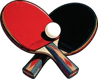
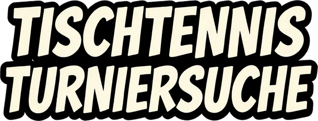

Bundesweiter Aggregator für Tischtennisturniere · 18 Landesverbände · freie Turniere
Angaben gemäß § 5 DDG (Digitale-Dienste-Gesetz)
Adam Nümm
Maybachufer 28
12047 Berlin
E-Mail: mail@adamnuemm.de
Adam Nümm, Anschrift wie oben
Diese Seite ist ein privates, nicht-kommerzielles Hobbyprojekt ohne Verbindung zum DTTB oder einem Landesverband. Die angezeigten Turnierdaten werden automatisiert von den offiziellen click-TT Seiten der Verbände bezogen. Für die Richtigkeit, Vollständigkeit und Aktualität dieser fremden Daten wird keine Gewähr übernommen.
Diese Seite verlinkt auf externe Webseiten Dritter, auf deren Inhalte kein Einfluss besteht. Für diese fremden Inhalte ist stets der jeweilige Anbieter verantwortlich.
Marken-, Namens- und Bildrechte an „click-TT", „DTTB" sowie den Verbandsdaten liegen bei den jeweiligen Rechteinhabern.
Informationen gemäß Art. 13 / 14 DSGVO · Stand: Juni 2026
Verantwortlich für die Datenverarbeitung auf dieser Website ist:
Adam Nümm
Maybachufer 28, 12047 Berlin
E-Mail: mail@adamnuemm.de
Diese Website ist ein privates, nicht-kommerzielles Hobbyprojekt. Es werden keine Cookies gesetzt, keine Nutzerkonten geführt und keine Analyse-, Tracking-, Werbe- oder Social-Media-Dienste eingesetzt. Personenbezogene Daten werden ausschließlich in dem nachfolgend beschriebenen, technisch notwendigen Umfang verarbeitet.
Beim Aufruf der Website erfasst der Hosting-Anbieter automatisch technische Zugriffsdaten, die Ihr Browser übermittelt (insbesondere IP-Adresse, Datum und Uhrzeit, abgerufene Datei, übertragene Datenmenge, Referrer-URL, Browsertyp und Betriebssystem). Dies ist erforderlich, um die Website auszuliefern sowie ihre Stabilität und Sicherheit zu gewährleisten. Rechtsgrundlage ist Art. 6 Abs. 1 lit. f DSGVO (berechtigtes Interesse an einer technisch fehlerfreien und sicheren Bereitstellung). Die Logfiles werden nach kurzer Zeit gelöscht oder anonymisiert.
Hosting-Anbieter (bitte ergänzen): Name und Anschrift des Anbieters, bei dem ttturniersuche.de gehostet wird.
Zur Darstellung der Karte, zur Zuordnung von Ortsnamen und zum Abruf der Turnierdaten werden Inhalte externer Anbieter geladen. Dabei wird Ihre IP-Adresse technisch zwingend an den jeweiligen Anbieter übermittelt, damit die Inhalte an Ihren Browser ausgeliefert werden können. Rechtsgrundlage ist Art. 6 Abs. 1 lit. f DSGVO (berechtigtes Interesse an einer funktionsfähigen, übersichtlichen Darstellung der Turniersuche).
a) OpenStreetMap (Kartendarstellung)
Das Kartenmaterial wird von Servern der OpenStreetMap Foundation, St John's Innovation Centre, Cowley Road, Cambridge, CB4 0WS, Vereinigtes Königreich, geladen. Datenschutzhinweise: wiki.osmfoundation.org/wiki/Privacy_Policy
b) Nominatim (Geokodierung)
Zur Umwandlung von Ortsnamen in Kartenkoordinaten wird der Dienst Nominatim der OpenStreetMap Foundation angefragt. Übermittelt werden dabei Ihre IP-Adresse sowie der jeweils gesuchte Ortsname.
c) Cloudflare / cdnjs (Programmbibliothek)
Die Karten-Bibliothek „Leaflet" wird über das Content-Delivery-Network cdnjs der Cloudflare, Inc., 101 Townsend Street, San Francisco, CA 94107, USA, geladen. Cloudflare ist unter dem EU-U.S. Data Privacy Framework zertifiziert.
d) Daten-Proxy (Render)
Der Abruf der Turnierdaten von den offiziellen click-TT-Seiten der Verbände sowie die optionale Web-Suche erfolgen über einen technischen Vermittlungsserver (Proxy), der bei der Render Services, Inc. (USA) betrieben wird. Dabei werden Ihre IP-Adresse sowie ggf. Ihre Sucheingaben an diesen Server übermittelt. Der Proxy ruft die Daten serverseitig ab; Ihr Browser kontaktiert die Verbandsseiten dadurch nicht unmittelbar.
Hinweis zur Drittlandübermittlung: Bei den Diensten unter c) und d) kann eine Übermittlung personenbezogener Daten in die USA erfolgen (Drittland im Sinne der Art. 44 ff. DSGVO). Ein angemessenes Datenschutzniveau wird, soweit einschlägig, über das EU-U.S. Data Privacy Framework bzw. über Standardvertragsklauseln gewährleistet.
Zur Ermittlung der Besucherzahlen wird der datenschutzfreundliche Analysedienst GoatCounter eingesetzt. GoatCounter verwendet keine Cookies und legt keine geräteübergreifenden Kennungen an. Zur Unterscheidung wiederkehrender Aufrufe wird kurzfristig eine nicht rückführbare Prüfsumme (Hash) aus IP-Adresse und Browserkennung gebildet, die nur für wenige Stunden im Arbeitsspeicher gehalten und nicht dauerhaft gespeichert wird. In der Auswertung werden ausschließlich aggregierte, anonyme Werte gespeichert (aufgerufene Seite, verweisende Seite, Browser, Betriebssystem, Bildschirmgröße, ungefähres Herkunftsland). Ein Personenbezug entsteht dabei nicht. Das Zähl-Skript wird von gc.zgo.at geladen. Rechtsgrundlage ist Art. 6 Abs. 1 lit. f DSGVO (berechtigtes Interesse an einer datensparsamen Reichweitenmessung). Weitere Informationen: goatcounter.com/help/privacy
Diese Website verwendet keine Cookies, kein Local Storage zu Tracking-Zwecken und keine Werbe- oder Social-Media-Dienste. Es findet kein nutzerbezogenes Profiling statt.
Personenbezogene Daten werden nur so lange verarbeitet, wie es für die genannten Zwecke erforderlich ist oder gesetzliche Aufbewahrungspflichten dies vorsehen. Anschließend werden sie gelöscht.
Sie haben das Recht auf Auskunft (Art. 15 DSGVO), Berichtigung (Art. 16), Löschung (Art. 17), Einschränkung der Verarbeitung (Art. 18), Datenübertragbarkeit (Art. 20) sowie ein Widerspruchsrecht gegen die Verarbeitung (Art. 21 DSGVO). Zur Ausübung genügt eine formlose Nachricht an die oben genannte Kontaktadresse.
Sie haben das Recht, sich bei einer Datenschutz-Aufsichtsbehörde zu beschweren. Für den Verantwortlichen zuständig ist die Berliner Beauftragte für Datenschutz und Informationsfreiheit, Alt-Moabit 59–61, 10555 Berlin.
Diese Website nutzt aus Sicherheitsgründen eine TLS-Verschlüsselung der Datenübertragung, erkennbar an „https://" in der Adresszeile.
Es gilt die jeweils aktuelle, auf dieser Website veröffentlichte Fassung. Bei Änderungen der Datenverarbeitung wird diese Erklärung angepasst.